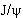

|
А.В. Сопов
Кварковая модель адронов
Введение
Целый пласт новых явлений и понятий был вскрыт при
исследовании сильных взаимодействии. Еще в 40-х годах стало ясно, что нуклоны
отнюдь не являются единственными частицами, обладающими сильными
взаимодействиями. Они принадлежат к общему классу частиц, впоследствии названных
адронами. По-гречески “хадрос” - массивный, сильный. С пуском мощных ускорителей
новые адроны посыпались, как из рога изобилия, и в настоящее время известно
более трехсот видов адронов. В 60-х годах была выдвинута гипотеза, что все
адроны построены из более фундаментальных частиц, названных кварками.
Последующие исследования подтвердили правильность этой гипотезы.
Адроны и кварки
Главная идея, высказанная впервые М. Гелл-Манном и Дж.
Цвейгом, состоит в том, что все частицы, участвующие в сильных взаимодействиях,
построены из более фундаментальных частиц – кварков.
Все кварки имеют спин, равный 1/2. В настоящее время установлено существование
пяти разновидностей кварков: и, d, s, с, b, t.
Кварки и, с и t имеют электрический заряд, равный +2/3, а
кварки d, s и b - заряд, равный -1/3. Кварки с зарядом +2/3 принято называть
верхними, а с зарядом -1/3 - нижними. Обозначения кварков происходят от
английских слов up, down, strange, charm, bottom, top.
Кварковая модель была предложена в то время, когда были известны
лишь так называемые легкие адроны, т.е. адроны, состоящие только из легких
кварков, и, d и s. Эта модель сразу привела в порядок всю систематику
этих адронов. На ее основе не только была понята структура уже известных к тому
времени частиц, но и предсказан ряд неизвестных в то время адронов.
Все адроны можно разбить на два больших класса. Одни,
называемые барионами, состоят из трех кварков. Барионы - фермионы, у них -
полуцелый спин. Другие - называемые мезонами, состоят из кварка и антикварка.
Мезоны - бозоны, у них - целый спин.
Нуклоны являются самыми легкими барионами. Протон состоит из
двух u-кварков и одного d-кварка (р = uud), нейтрон из двух d-кварков и
одного u-кварка (n = ddu). Нейтрон тяжелее протона, поскольку d-кварк тяжелее
u-кварка.
Барионы, состоящие не только из и- и d-кварков, называются
гиперонами. Например, самый легкий из гиперонов - Λ-гиперон состоит
из трех разных кварков: Λ = uds.
Самые легкие из мезонов -  -мезоны, или пионы: π+, π-,
π0. Кварковая структура заряженных пионов проста: -мезоны, или пионы: π+, π-,
π0. Кварковая структура заряженных пионов проста:
π+ = u ,,
π- = d ,,
π- = d , ,
Что касается нейтрального пиона, то он представляет собой
линейную комбинацию состояний u
и d: часть времени
он проводит в состоянии u,
часть - в состоянии d. С равной
вероятностью 0-мезон
можно застать в каждом из этих состояний:
 . .
Массы π+- и π--мезонов (эти мезоны
взаимно являются античастицами) равны примерно 140 МэВ; масса π0-мезона
(π0-мезон
подобно фотону истинно нейтрален) равна примерно 135 МэВ.

Кварковый состав протона и нейтрона

Кварковый состав +-мезона
и --мезона,
Следующие в порядке возрастания масс мезоны - это
K-мезоны, их масса равна примерно 500 МэВ. K-мезоны содержат s-кварки:
K+ = u ,
K0
= d,
K0 = s,
K-
= s. ,
K0
= d,
K0 = s,
K-
= s.
K+- и K--мезоны являются античастицами по отношению
друг к другу. То же относится и к K0- и
K0-мезонам, которые, таким образом, не являются
истинно нейтральными частицами.
Очевидно, что из трех кварков (u, d, s) и трех антикварков (, , )
можно построить девять различных состояний:
u,
u, u, d,
d, d, s,
s, s.
Семь из этих девяти состояний (три для π-мезонов и четыре для K-мезонов) уже
рассмотрены; два оставшиеся представляют собой суперпозиции - линейные
комбинации состояний u, d
и s. Масса
одной из двух частиц - масса η-мезона
- равна 550 МэВ, масса η'-мезона равна 960
МэВ;


Подобно π0-мезону,
η- и
η'-мезоны являются истинно нейтральными частицами.
Девять мезонов, которые были рассмотрены, имеют нулевой спин:
J = 0. Каждый из этих мезонов состоит из кварка и антикварка, имеющих нулевой
орбитальный момент: L = 0. Спины кварка и антикварка смотрят навстречу
друг другу, так что их суммарный спин также равен нулю: S = 0. Спин мезона J
является геометрической суммой орбитального момента кварков L и их
суммарного спина S:
J = L + S.
В данном случае сумма двух нулей, естественно, дает нуль.
Каждый из обсуждаемых девяти мезонов - самый легкий в своем
роде. Рассмотрим, например, мезоны, у которых орбитальный момент кварка и
антикварка по-прежнему равен нулю, L = 0, но спины кварка и антикварка
параллельны, так что S = 1 и, следовательно, J = 1. Такие мезоны образуют более
тяжелую девятку:
| ρ+, ρ-, ρ0 |
K*+, K*0, K*-,
K*0, |
ω0 |
φ0 |
| 770 МэВ |
892 МэВ |
783 МэВ |
1020 МэВ |
Известны многочисленные мезоны, у которых L 0
и J > 1. 0
и J > 1.
Обратимся теперь к барионам, построенным из u-, d- и
s-кварков. Согласно кварковой модели, орбитальные моменты трех кварков в нуклоне
равны нулю, и спин нуклона J равен геометрической сумме спинов кварков. Так,
например, спины двух u-кварков в протоне параллельны, а спин d-кварка смотрит в
противоположную сторону. Так что у протона J = 1/2.
Согласно кварковой модели, протон, нейтрон,  -гиперон
и еще пять других гиперонов образуют октет (восьмерку) барионов с J = 1/2; а
барионы с J = 3/2 образуют декуплет (десятку): -гиперон
и еще пять других гиперонов образуют октет (восьмерку) барионов с J = 1/2; а
барионы с J = 3/2 образуют декуплет (десятку):
| ddd udd uud иии |
Δ-
Δ0
Δ+
Δ++ |
1232 МэВ |
| dds uds uus |
Σ-
Σ0
Σ+ |
1385 МэВ |
| dss uss |
Ξ-
Ξ0 |
1530 МэВ |
| sss |
Ω- |
1672 МэВ |
Очарованные частицы
Настоящим триумфом кварковой модели явилось открытие очарованных частиц,
содержащих с-кварки (русское слово “очарование” соответствует английскому charm).
Первая очарованная частица - так называемый -мезон
с массой 3.1 ГэВ - была открыта в 1974 г. J/ψ -мезон был открыт практически
одновременно на двух различных ускорителях. На протонном ускорителе -мезон
наблюдался среди продуктов столкновения протонного пучка с бериллиевой мишенью
по его распаду J/ψ → е+е-. На электронно-позитронном
коллайдере его наблюдали в реакции е+е- → J/ψ. Первая
группа физиков назвала этот мезон J, вторая - ψ, так. J/ψ-мезон получил свое
двойное имя.
J/ψ-мезон является одним из уровней системы c , которая
называется “чармоний” (от английского charm). В некотором смысле система c
напоминает атом водорода. Однако в каком бы состоянии ни находился атом водорода
(на каком бы уровне ни находился его электрон), его все равно называют атомом
водорода. В отличие от этого, разные уровни чармония (и не только чармония, но и
других кварковых систем) рассматриваются как отдельные мезоны. В настоящее время
обнаружено и исследовано около десятка мезонов - уровней чармония. Уровни эти
отличаются друг от друга взаимной ориентацией спинов кварка и антикварка,
значениями их орбитальных угловых моментов, различиями в радиальных свойствах их
волновых функций. , которая
называется “чармоний” (от английского charm). В некотором смысле система c
напоминает атом водорода. Однако в каком бы состоянии ни находился атом водорода
(на каком бы уровне ни находился его электрон), его все равно называют атомом
водорода. В отличие от этого, разные уровни чармония (и не только чармония, но и
других кварковых систем) рассматриваются как отдельные мезоны. В настоящее время
обнаружено и исследовано около десятка мезонов - уровней чармония. Уровни эти
отличаются друг от друга взаимной ориентацией спинов кварка и антикварка,
значениями их орбитальных угловых моментов, различиями в радиальных свойствах их
волновых функций.
Вслед за чармонием были открыты и мезоны с явным очарованием:
D+ = c,
D- = d,
D0 = c,
D0 = u,
F+
= c, F-
= s.
Были открыты также и очарованные барионы.
Открытие очарованных частиц, а затем и еще более тяжелых
адронов, содержащих b-кварки, и исследование их свойств явилось блестящим
подтверждением кварковой теории адронов. Впервые, благодаря большой массе с- и
b-кварков, предстала во всем своем богатстве и наглядности картина уровней
системы кварк-антикварк.
Невылетание кварков
Если все адроны состоят из кварков, то, казалось бы,
должны существовать и свободные кварки. Обнаружить свободные кварки было бы
легко. Ведь они обладают дробными электрическими зарядами. А нейтрализовать
дробный заряд никаким числом электронов и протонов нельзя: всегда будет или
“недолет” или “перелет”. Если, скажем, в капельке масла содержится один кварк,
то заряд всей капельки будет дробным. Опыты с капельками проводились еще в
начале века, когда измеряли заряд электрона. В поисках кварков их повторили в
наше время с гораздо более высокой точностью. Но дробных зарядов так и не
обнаружили. К отрицательному результату привел и очень точный
масс-спектроскопический анализ воды, который дал верхний предел для отношения
числа свободных кварков к числу протонов порядка 10-27. Кварки искали
и ищут среди материковых пород, отложений на дне океана, в лунном грунте, но
свободные кварки так и не были обнаружены.
Сложилось парадоксальное положение. Внутри адронов кварки,
несомненно, существуют. Об этом свидетельствует не только кварковая систематика
адронов, но и прямое “просвечивание” нуклонов высокоэнергичными электронами.
Теоретический анализ этого процесса (он носит название глубоко-неупругого
рассеяния) показывает, что внутри адронов электроны рассеиваются на точечных
частицах с зарядами, равными +2/3 и -1/3, и спином, равным 1/2. В процессе
глубоко-неупругого рассеяния электрон резко меняет свой импульс и энергию,
отдавая значительную их часть кварку. В принципе это очень похоже на то, как
резко меняет свой импульс  -частица,
наталкиваясь на ядро атома. -частица,
наталкиваясь на ядро атома.
Дробные заряды кварков проявляются и в другом
глубоко-неупругом процессе: рождении струй адронов в аннигиляции e+e-
при высоких энергиях.
Итак, кварки внутри адронов несомненно есть. А вот вырвать их
из адронов невозможно. Это явление называется английским словом “конфайнмент”,
что означает пленение, тюремное заключение. Кварк, приобретший энергию в
результате столкновения с электроном, не вылетит из нуклона как свободная
частица, а растратит свою энергию на образование кварк-антикварковых пар, т. е.
на образование новых адронов, в основном - мезонов.

Рассеяние электрона на одном
из трех кварков протона. |

Рассеяние -частицы
на ядре атома. |
В некотором смысле попытка разбить какой-нибудь мезон на
составляющие его кварк и антикварк похожа на попытку разломить стрелку компаса
на южный и северный полюсы: сломав стрелку, мы получим вместо одного магнитного
диполя - два. Разломив мезон, мы получим два мезона. Энергия, которую мы
затратим на то, чтобы растащить исходные кварк и антикварк, пойдет на создание
новой пары антикварк плюс кварк, которые образуют с исходными два мезона.
Но аналогия с магнитной стрелкой неполна и обманчива. Ведь мы
знаем, что в железе не только на макроуровне, но и на микроуровне никаких
магнитных полюсов нет, есть только магнитные дипольные моменты, обусловленные
спинами и орбитальным движением электронов. Напротив, глубоко внутри адронов
отдельные кварки существуют - чем глубже мы проникаем внутрь, тем отчетливее мы
их видим.
В гравитации и в электродинамике мы привыкли к тому, что силы
между частицами растут, когда частицы сближаются, и ослабевают, когда частицы
расходятся (потенциалы типа 1/r). В случае кварка и антикварка ситуация другая.
Имеется критический радиус r0 10-13 см: при r << r0
потенциал между кварком и антикварком более или менее похож на кулоновский или
ньютоновский, но при r > r0 его поведение резко меняется - он
начинает расти. 10-13 см: при r << r0
потенциал между кварком и антикварком более или менее похож на кулоновский или
ньютоновский, но при r > r0 его поведение резко меняется - он
начинает расти.
Можно думать, что если бы в мире не было легких кварков (и, d,
s), а были бы только тяжелые (с, b, t), то в этом случае начиная с rr0
потенциал возрастал бы линейно с ростом r, и мы имели бы конфайнмент,
описываемый потенциалом типа воронки. Линейно растущему потенциалу соответствует
сила, не меняющаяся с расстоянием. Напомним, что при растяжении обычной жесткой
пружины ее потенциальная энергия квадратично растет с ее удлинением. Поэтому
конфайнмент, описываемый линейно растущим потенциалом, естественно назвать
мягким.
К сожалению, в реальном мире рождение пар легких кварков не
дает возможности развести исходные кварк и антикварк на расстояния, большие
10-13 см, без того, чтобы исходные кварк и антикварк вновь не
оказались связанными, на этот раз - в двух различных мезонах. Так что испытать
мягкую пружину конфайнмента на больших расстояниях не удается.

Зависимость потенциальной энергии взаимодействия кварка с антикварком от
расстояния между ними
В результате мы видим, что кварки внутри адронов
взаимодействуют друг с другом, и взаимодействие это, очевидно, сильное, иначе
адроны без труда можно было бы расщепить на составляющие их кварки. Теория этих
взаимодействий называется квантовой хромодинамикой. Согласно основным
идеям квантовой хромодинамики взаимодействие кварков осуществляется посредством
обмена особыми частицами – глюонами (от английского glue – клей).
Глюоны “склеивают” кварки воедино. Подобно фотонам, глюоны имеют спин равный
единице, лишены электрического заряда и не имеют массы покоя. Для сравнения
показываем, что в случае электромагнитного взаимодействия силовые линии
расходятся от их источника - электрического заряда веером, ибо виртуальные
фотоны, испущенные одновременно источником, не взаимодействуют друг с другом.
В отличие от этой картины глюоны сильно взаимодействуют друг
с другом. В результате вместо веера из силовых линий мы имеем жгут. Жгут
протянут между кварком и антикварком, но самое удивительное то, что сами глюоны,
имея цветные заряды, становятся источниками новых глюонов, число которых
нарастает по мере их удаления от кварка. Такая картина взаимодействия
соответствует зависимости потенциальной энергии взаимодействия между кварками от
расстояния между ними.

Схема силовых линий электрического поля в электростатике (а), глюонного поля
между кварком и антикварком (б) и схема разрыва жгута при его большом растяжении
(в).
Кварки и цвет
Для согласования кварковой модели адронов с принципом
Паули был предложен новый, усложненный вариант модели. Эта модель была
предложена в 1965г Н. Н. Боголюбовым, Б. В. Струминским, А. Н. Тавхелидзе
в СССР и независимо Й. Намбу, М. И. Ханом в США. В ней каждый из
кварков может появляться в трех различных состояниях, идентичных по всем
свойствам, кроме нового особого свойства, названного “цветом” (например,
кварки могут быть красными, синими или желтыми). Цвет не имеет прямого отношения
к тому, что принято называть цветом в повседневной жизни. Кварки никак нельзя
мыслить в виде окрашенных шариков.
Определенный тип кварков (u, d или s) часто именуют
“ароматом”. Кварки, как говорят, различают по цвету и аромату. Согласно этой
терминологии каждый аромат кварка может проявляться в трех различных цветовых
состояниях, характеризуемых одинаковыми массами, электрическими зарядами и всеми
другими свойствами. Антикварки имеют цвета антижелтый, антисиний, антикрасный.
Число различных кварков, включая антикварки, равно: 6 x 2 x 3 = 36.
На первый взгляд может показаться, что утроение числа кварков
должно привести к значительному увеличению числа адронов, составленных из
кварков. Однако в действительности это не так. Чтобы результаты новой кварковой
модели согласовались с действительностью, вводится принцип “бесцветности”.
Согласно этому принципу все адроны должны быть бесцветными или белыми. Это
означает, что каждый барион должен состоять из трех кварков различных цветов.
Так как кваркам приписывают основные цвета спектра, то каждая комбинация может
быть названа белой, поскольку при смешении основных цветов получается белый
цвет. При таком построении барионов принцип Паули выполняется автоматически.
Мезоны также бесцветны: каждый из них состоит из кварка и
антикварка, цвета которых дополнительны. Причем цвет и антицвет кварков любого
аромата непрерывно меняются. Аналогично цвета кварков в барионах не фиксированы
и претерпевают непрерывные изменения. Гипотеза бесцветности однозначно приводит
к определенным правилам конструирования барионов и мезонов из кварков и
автоматически исключает комбинации из двух или четырех кварков.
Правила компонации адронов после введения постулата
бесцветности остаются теми же, что и раньше, но получают некоторое обоснование.
Правда, сам постулат убедительного теоретического обоснования пока не имеет.
Косвенное же экспериментальное подтверждение гипотезы цветных кварков удается
получить. При аннигиляции электронно-позитронных пар высокой энергии в одних
случаях появляются адроны, а в других пары  --,
+-
мюонов. Отношение числа случаев рождения адронов к числу случаев рождения мюонов
зависит, согласно теории, от числа различных кварков. Гипотеза цветных кварков
приводит к неплохому согласию с экспериментом, в то время как первоначальная
кварковая модель дает заведомо неверные результаты. --,
+-
мюонов. Отношение числа случаев рождения адронов к числу случаев рождения мюонов
зависит, согласно теории, от числа различных кварков. Гипотеза цветных кварков
приводит к неплохому согласию с экспериментом, в то время как первоначальная
кварковая модель дает заведомо неверные результаты.
Сечения πp- и pp- взаимодействий
Сечение - величина, определяющая вероятность перехода
системы взаимодействующих частиц в определенное конечное состояние. Величина
сечения  равна
отношению числа таких переходов в единицу времени I к числу частиц, падающих на
мишень в единицу времени I0
отнесенное к количеству частиц мишени в единице площади n равна
отношению числа таких переходов в единицу времени I к числу частиц, падающих на
мишень в единицу времени I0
отнесенное к количеству частиц мишени в единице площади n
 . .
Сечение имеет размерность площади. Обычно используется
единица барн или ее производные - 1 барн = 10-24 см2, 1 миллибарн = 10-3 б,
1 микробарн = 10-6 б.
Различным процессам соответствуют различные величины сечений.
Экспериментальные измерения сечений позволяют получить информацию о структуре
сталкивающихся частиц, понять механизмы их взаимодействия. Так, эксперименты по
рассеянию электронов на ядрах, нейтронах и протонах позволили определить их
размеры и распределение в них электрического заряда и магнитного момента.
Отношение сечений p- и pp-взаимодействий подтверждает
справедливость кварковой модели. Как известно, протон – барион и состоит из трех
кварков: двух u-кварков и одного d-кварка (р = uud). В свою очередь -мезоны
состоят из двух кварков, а точнее из кварка и антикварка (например, +
= u, и - = d). При взаимодействии -мезона с протоном каждый кварк -мезона может
взаимодействовать с каждым кварком протона. Аналогично происходит в
протон-протонном взаимодействии. Тогда, если предположить, что взаимо-действие
между адронами не зависит от типов кварков из которых они состоят, то отношение
сечений p- и
pp-взаимодействий должно быть равно  .
Экспериментальные измерения показывают, что при достаточно высоких энергиях
отношение .
Экспериментальные измерения показывают, что при достаточно высоких энергиях
отношение  то есть близко к 2/3, что подтверждает теоретическое предположение о
независимости взаимодействий между частицами от типов кварков.
то есть близко к 2/3, что подтверждает теоретическое предположение о
независимости взаимодействий между частицами от типов кварков.
Заключение
Целый пласт новых явлений и понятий был вскрыт благодаря
гипотезе, гласящей что все адроны построены из фундаментальных частиц, названных
кварками. Кварковая модель была предложена в то время, когда были известны лишь
так называемые легкие адроны, то есть состоящие только из легких кварков, u, d и
s. Эта модель сразу привела в порядок всю систематику этих адронов. На ее основе
не только была понята структура уже известных к тому времени частиц, но и
предсказан ряд неизвестных в то время частиц, а открытие очарованных частиц, а
затем и еще более тяжелых адронов, содержащих b-кварки, и исследование их
свойств явилось блестящим подтверждением кварковой теории адронов. Впервые,
благодаря большой массе с- и b-кварков, предстала во всем своем богатстве и
наглядности картина уровней системы кварк-антикварк. Эффект от этого открытия
был очень велик. В кварки поверили даже те, кто раньше относился к ним более чем
скептически. Создание и развитие квантовой хромодинамики так же пролило свет на
несогласованности имевшие место в кварковой модели. В настоящее время нет ни
одного факта, который бы противоречил квантовой хромодинамике. Однако целый ряд
явлений находит в ней лишь качественное объяснение, а не количественное
описание.
Список используемой литературы
- Л. Б. Окунь “Элементарное введение в физику элементарных частиц.” М.:
ФИЗМАТЛИТ, 2006.
- Г.С. Ландсберг “Элементарный учебник физики” Т.3. Колебания и волны.
Оптика. Атомная и ядерная физика. М.: ФИЗМАТЛИТ, 2003.
- Я. Коккедэ “Теория кварков” М.: МИР, 1971.
- W.-M Yao et al., Journal of Physics G 33, 1 (2006).

|